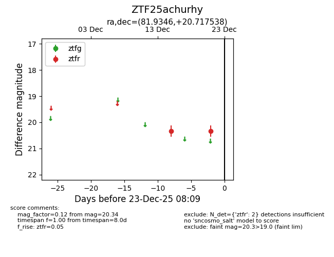
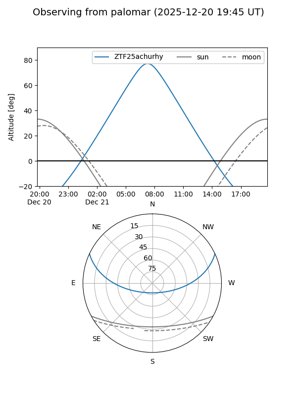

ZTF25achurhy
Target ZTF25achurhy at 2025-12-23 08:14
Aliases and brokers:
FINK: fink-portal.org/ZTF25achurhy
Lasair: lasair-ztf.lsst.ac.uk/objects/ZTF25achurhy
ALeRCE: alerce.online/object/ZTF25achurhy
alt names
ZTF25achurhy (ztf,fink_ztf)
Coordinates:
equatorial (ra, dec) = 81.9346,+20.71754
equatorial (HMS+DMS) = 05:27:44.29,+20:43:03.14
galactic (l, b) = (184.7973,-7.81593)
Flags:
Photometry:
last ztfr=20.34
2 ztfr detections
Lightcurve

Visibility


Additional plots